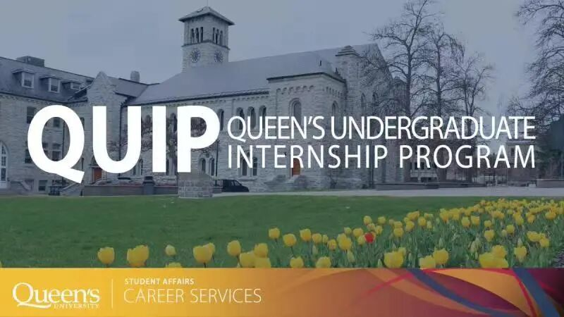

导语
大家好呀，今天熊猫酱带领大家来看一看Queen's为大家提供的实习平台QUIP，并且带领大家对QUIP有一个基本了解，以便于大家在大二大三时可以顺利申请到实习项目。
QUIP简介
QUIP，全称Queen’s Undergraduate Internship Program，是学校为大二和大三的学生提供的实习平台，学校提供的intern一般是12-16个月，国内学生和国际学生皆可申请。这些带薪实习通常有专业指导并且可以积累工作经验，旨在带领学生体验行业进步，并且对当前匹配领域的技术革新有基本了解。

申请要求
QUIP对本国学生与国际学生都开放，如果想申请实习项目，需要满足：
1、大二、大三学生，并且必须在实习结束后返回学校完成Degree Plan所规定的课程
2、GPA最低1.9
3、属于文理学院、工程学院、计算机学院与健康研究（Health Studies）学院
4、在参加CO-OP之前，国际学生需要确保自己的学习许可在实习结束后依旧处于有效状态，否则可能会被要求申请延长学习许可，具体情况可以联系QUIC。
申请方法
1、在QUIP官网上找到与自己学院相符的申请表，并且下载下来
2、阅读申请表中的政策与要求。
3、再次确认自己是否满足前文所提到的要求
4、填写申请表
5、将申请表发给自己的Department的Undergraduate Assistant，参加QUIP的项目需要获得Undergraduate Chair的许可签名
6、前面的步骤完成之后，登入MyCareer（https://careers.sso.queensu.ca/home.htm），点击**右下角蓝色的三个点**，提交申请表并且**缴纳35加元的申请费**（不可退还）
在注册步骤完成之后，会收到一封来自QUIP的欢迎邮件，并且在ONQ平台上也有QUIP的内容（和别的课程一样），在申请实习之前，学校会开展一些Workshop以帮助大家为申请和面试做好准备，学校强烈建议大家去参加这些Workshop，以便更快并且更有效率申请到自己心仪的实习
各个学院的注意事项
1、工程学院
工程学院学生会注册10.5（12个月）-14（16个月）个学分的实习，分别为ASPC302/3.5、ASPC303/3.5、ASPC301/3.5或ASPC304/3.5（二选一）
这些实习课程不可以替代你的required courses。在这些课程中，你需要完成小组作业或者seminar，并且接受雇主的评价以获得学分。成功完成实习可以在毕业证上获得标注（with professional internship）
2、计算机学院
计算机学院的学生也可以申请实习，分别为COMP 390/6.0, COMP 391/3.0, COMP 392/3.0 和 COMP 393/3.0。这四门课可以替代专业课，分别是CISC 496/3.0 或CISC 498/6.0 或 CISC 499/3.0 或 COGS 499/3.0（只能替代一门）。
在实习课程中，你需要完成实习报告以获得学分。成功获得学分后，毕业证与成绩单上也会拥有标注，与工程学院一样。
3、文理学院
文理学院的学生可以拿到6个学分的实习，无论是BAH还是BSCH，可选择课程分别为INTN 301/1.5; INTN 302/1.5; INTN 303/3.0 或 (INTN 304/1.5 和 INTN 305/1.5）。
这些实习既不能替代专业课也不能代替electives，但由于各个系的规定不一样，学生可以选择3-6个学分的实习，这些课也有可能应用到你的major、minor、medial和specialization plan里面，建议大家先向department咨询。同样的，成功完成实习之后，成绩单与毕业证上会有标注。
4、健康研究学院
BHSc的学生无论线上还是线下，都可以申请实习，可选择课程分别是HSCI 301/1.5; HSCI 302/1.5; HSCI 303/3.0 (12个月) 或 HSCI 304/1.5; HSCI 305/1.5 (16个月)。
这些课程属于BHSc的Degree plan，因此它们既不可以充当必修课也不可以充当非必修课。同时，BHSc的学生每学期最多可以修3个学分的intern，在成功完成intern过后，成绩单和毕业证上都会有标注。
结语
以上就是对于QUIP的介绍啦，申请intern越早越好，所以大家看到有合适的就尽快下手吧！在大家大二入系之后，系里面也会为大家提供internship的机会，遇到喜欢的可千万不要错过！**我们也为大家建了一个QUIP的交流群，感兴趣的同学欢迎添加下方小助手微信进群。**最后，希望大家可以找到合适自己的实习，为自己的大学生活留下特别的回忆！
文字 | Christy
排版 | Christy
编辑 | Rika
审核 | 容易 Olivia